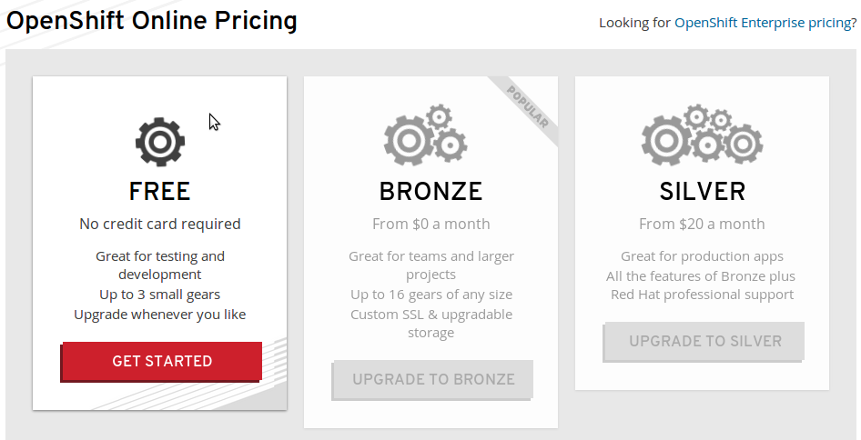

I have always been looking for a perfect personal note taking tool, and tried many different things, yet I'm satisified with none of them. Evernote is neat and clean, has great support for rich text format, as well as pictures, audio and video. It's also web based, and has nice apps on almost all the popular desktop and mobile OSes. Honestly, it has everything you would expect for a personal note taking tool, probably even more. But there is only one thing missing, a markup language of your choice.
TiddlyWiki is an interesting tool, that it's written completely in JavaScript and run in a client browser. I used to take notes with TiddlyWiki in firefox with a plugin to save to local file, and put that file in my GoogleDrive sync folder. I was almost satisfied except for once that I forgot to click the save button and a full day work was gone. I mean, come on, it's 2014, and we don't really need a save button like 20 years ago right?
Fortunately, the latest TiddlyWiki5 seems to have all these fixed, and it didn't take me very long to have a perfect setup on OpenShift.
Cloud App Hosting
The latest TiddlyWiki5 can be hosted on a server with nodejs. There are many free App hosting sites like nodejitsu and heroku, of which I like OpenShift the most. The bias is not because OpenShift is backed by the famous open source company RedHat, but that I have to agree they do have a good understanding of what a developer with Unix background really needs, paticularly the SSH connection that I can manage the app, storage, and check what's going in a familiar way.
The free plan supports up to 3 small gears, which is sufficient to get started.

Setting up TiddlyWiki5 on OpenShift
While OpenShift supports app management from web or IDE, a command line is still my best friend, and especially rhc is such an intuitive one.
Installation is easy on Ubuntu once you get an account,
$ sudo apt-get install rubygems
$ sudo gem install rhc
$ sudo gem update rhc
Now use rhc to create an app with nodejs as backend,
$ rhc setup # login, setup SSH keys and domain
$ rhc app create tiddlywiki5 nodejs-0.10 --no-git
You will need to pick up your domain, so your app can be accessed from
<appname>-<domain>.rhcloud.com
--no-git tells rhc not to create a local git repo (however, an empty
git repo on the server is still created), as we will use TiddlyWiki5 on
github as the repo instead of starting from a new.
rhc apps will give an overview of the apps of your account, e.g.
tiddlywiki5 @ http://tiddlywiki5-domain.rhcloud.com/ (uuid: 123456789abcdef012345678)
--------------------------------------------------------------------
Domain: domain
Created: Mar 27 9:52 PM
Gears: 1 (defaults to small)
Git URL: ssh://123456789abcdef012345678@tiddlywiki5-domain.rhcloud.com/~/git/tiddlywiki5.git/
SSH: 123456789abcdef012345678@tiddlywiki5-domain.rhcloud.com
Deployment: auto (on git push)
nodejs-0.10 (Node.js 0.10)
--------------------------
Gears: 1 small
Next, download TiddlyWiki5 from github and push to the remote git,
$ git clone https://github.com/Jermolene/TiddlyWiki5
$ cd TiddlyWiki5
$ git remote add rhc <git-url>
$ git push -f rhc
<git-url> being the Git URL: displayed by rhc apps. OpenShift will
try to automatically deploy the app just pushed.
However, if you access http://tiddlywiki5-
diff --git a/package.json b/package.json
index c579df2..90a0ede 100644
--- a/package.json
+++ b/package.json
@@ -13,7 +13,7 @@
"bin": {
"tiddlywiki": "./tiddlywiki.js"
},
- "main": "./boot/boot.js",
+ "main" : "./server.js",
"repository": {
"type": "git",
"url": "https://github.com/Jermolene/TiddlyWiki5.git"
And create a server.js file to start the App:
var $tw = require("./boot/boot.js").TiddlyWiki();
$tw.boot.argv = [
process.env.OPENSHIFT_DATA_DIR,
"--verbose",
"--server",
process.env.OPENSHIFT_NODEJS_PORT,
"$:/core/save/all",
"text/plain",
"text/html",
"<username>",
"<password>",
process.env.OPENSHIFT_NODEJS_IP,
];
+$tw.boot.boot();
OpenShift will try to execute server.js for a nodejs app. Note the
ip address and port will have to be aligned with OpenShift, so the
requests can be redirected to your app. OpenShift provides two
environment variables OPENSHIFT_NODEJS_IP and OPENSHIFT_NODEJS_PORT
for this purpose.
And for file-system based storage, OpenShift offers a directory for
use in variable OPENSHIFT_DATA_DIR.
With the change, you have to commit and push to re-deploy.
$ git commit -a -m "Update for deployment on OpenShift"
$ git push -f rhc
Now you should be able see TiddlyWiki5 show up. If not, you can ssh to the server and check what's going wrong. The logs will be in nodejs/logs/node.log.
Escape of character "/"
There is still one more issue, when you create a new tiddler, you
will normally get a sync error. This seems to be an issue with
OpenShift, as long as your URL request contains character /, even
if it is escaped as %2F, it will still be recognized and filtered.
To workaround this issue, we would have to escape the / character
in a tiddler title to be something else. Currently I am using a naive
change like below.
When a url is generated for a tiddler to be uploaded to the server,
we escape it to something else in plugins/tiddlywiki/tiddlyweb/tiddlywebadaptor.js:
function encodeTiddlerTitle(title) {
return encodeURIComponent(title.replace(/\//g, "%SLASH%"));
}
And when the node.js server receives the request, it has to restore
the escaped sequence back to the original character in
core/modules/commands/server.js:
function decodeTiddlerTitle(title) {
return decodeURIComponent(title).replace(/%SLASH%/g, "/");
}
The full diff can be found here.